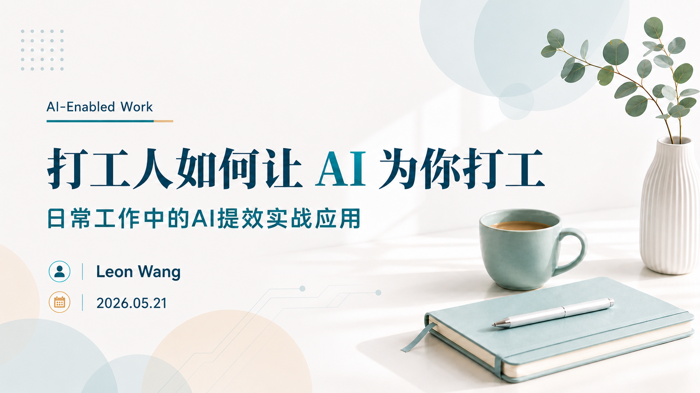
Act I · Opening
01 / 20
打工人如何让AI为你打工
AI-Enabled Work
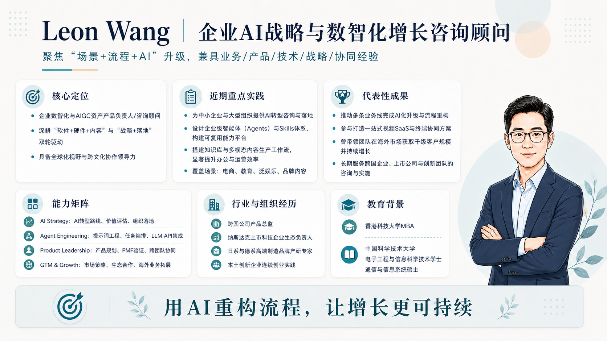
Act I · Opening
02 / 20
讲师介绍
About the Speaker
Act I · Readiness
03 / 20
Survey Snapshot
AI 已经进入日常使用
整体仍停留在基础应用阶段
从问卷看，大家已经开始高频使用 AI，在使用深度、方法、和场景方面还有很多拓展空间
使用频率
High Frequency
多数人已高频使用 AI，已经进入日常工作和生活场景
主要用途
Info Work
应用主要集中在查信息、写作、 翻译和整理等内容处理类工作
工具使用
Tool Choice
以 ChatGPT 为主，同时接触多种国产工具，但整体选择分散，未体现出关于场景适配的明确倾向
熟悉程度
Prompting
多数仍停留在常规一问一答的对话形式，结构化提示词的使用还不普遍，也没有使用智能体进行实际任务
希望AI承担
Delegation
更愿意交给 AI 处理重复性、结构化、和低创造性的事务性任务
延伸场景
Beyond Work
使用需求已从工作延伸到个人成长 生活决策 育儿 旅行等场景
讲座问卷结果一览
From Use to Value
Act I · Global Adoption
04 / 20
Global Adoption
AI在全球的普及程度
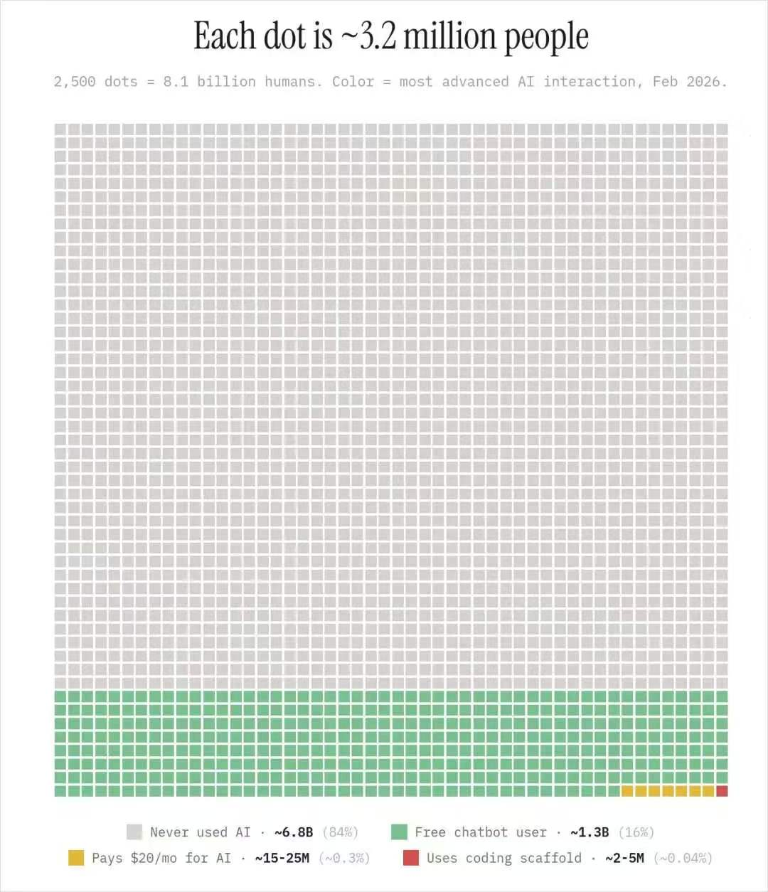
AI在全球的普及程度
Global Adoption
Act II · Decision Support
05 / 20
Scenario A · Procurement Review
在高时效决策型任务场景
AI 能帮你做什么
你刚收到 3 家供应商报价，1 小时后就要参加采购评审会，准备会议的同时还要先给管理层一个初步意见：优先考虑哪一家，以及背后的判断依据和比较逻辑。
手头有哪些信息
采购需求：产品规格、数量、交期上限、质量门槛和决策目标。
供应商报价：3 家供应商的材料单价、用量、损耗与物料明细。
工序与履约信息：工序费用、运费、交期、不良率和关键性能指标。
有哪些注意事项
材料分散、口径不一，交期和质量都不能只看表面价格。
交期和质量门槛是硬约束，不达标者即使便宜也不能推荐。
既要给管理层一句话结论，也要留下可追溯的计算依据和谈判抓手。
Pre-Meeting Goal
为了参加采购评审会，你需要先完成这 4 项准备
01 · Normalization
先统一比较口径
把材料、工序、运费和良品率折算成单件到厂成本，避免不同报价口径造成误判。
02 · Risk Control
再把风险点挑出来
识别交期、质量门槛和隐性成本，先排除“看起来便宜，实际代价更高”的选项。
03 · Recommendation
然后形成初步判断
明确哪家更适合作为主供应商，哪家可作为备选，哪家应重谈或淘汰。
04 · Negotiation
最后准备谈判策略
沉淀最值得追问和议价的点，让下一轮供应商沟通和内部复核都有依据。
AI 在这里更适合承担前置分析工作：先统一口径、筛掉不合格项，再把判断依据整理成可汇报的结论。
Decision Support · Before Final Judgment
采购比价：先把复杂材料整理成可判断结论
Procurement Review
Act II · Prompt with Structure
06 / 20
Six-Box Prompt Card
怎样给 AI 下指令
要像面对一个刚接手工作、不清楚情况的同事那样交代任务
Background
背景
你面对的是什么情况？你所处的角色是什么？上下文必须交代清楚。
Goal
目标
希望 AI 最终帮你达成什么结果，不要只给“做一下”这种空指令，要给出尽量具体的步骤指引。
Audience
受众
要向谁负责，产出内容交付给谁，决定了语气、重点、颗粒度和取舍方式。
Output
输出
你要的是简报、表格、邮件、纪要、演讲稿，还是一份清晰的行动清单。
Guardrails
约束
行为边界在哪里，哪些行动不被允许，哪些情况可以做合理推测，哪些地方必须标注“待确认”。
Reference
样例
给出一个参考模板或例子，往往比“请写得专业一点”更有效，但要澄清要参考的是哪些方面。
结构化提示词
Prompt Card
Act II · Meeting Intelligence
07 / 20
Scenario B · Supplier Summit
多受众输出型任务场景下
AI 能多样化高效并行产出
一场 300+ 人的全国供应商大会结束后，管理层、供应商、内部负责人和 PR 看到的必须是不同版本。
A · High-Level Brief
董事长一页简报
只看关键结论、主要风险、后续动作。
B · External & Internal Minutes
正式会后纪要
面向参会供应商和内部相关人员，符合密级，统一口径，区分语气和格式。
C · Action List
行动清单
事项详情、责任人、截止时间，必须一目了然。
D · Risk Warning
敏感表述预警
哪些承诺不能直接对外说，哪些内容必须先过审批。
Workflow Pipeline
01
Collect
素材集中进场
02
Transcribe
转成可检索文本
03
Distill
提炼核心信息和逻辑关系
04
Branch
按受众拆分版本 转换形式
05
Review
人审口径和边界
AI 组合工具的关键，是选择合适的工具、安排工序流程。
Workflow First
泛会议记录场景
Audience-Specific Output
Act II · Crisis Handling
08 / 20
Scenario C · Under Pressure
高压力应对型任务场景下 AI 能帮你从容应对挑战
你是大客户项目专员。周末期间，Top 3 客户的一笔关键订单突然面临延期风险：主管暂时失联，而你必须先扛住第一轮沟通。
Business Context
订单与客户背景
8,000 套定制办公入驻套装，金额约 135 万美元。客户新园区启用在即，若交付不到位，会直接影响集中入驻与对外展示。
Deadline & Contract
节点与合同约束
客户要求 6 月 18 日前到达欧洲仓，园区 6 月 25 日启用。延期超过 5 天有违约金，规格变更必须书面批准，重大风险必须及时通知并提出减损方案。
Current Situation
当前突发与可选资源
关键 65W 模块受国际冲突导致的绕行与排期变化影响，预计晚到 12 天。
原规格成品可立即发 2,000 套；另有 3,500 套待模块到料后完工。
替代模块 72 小时内可供 4,000 套，但降为 45W，且有轻微色差，需客户书面接受。
空运 1,500 套原规格模块可行，但会增加约 5.7 万美元成本。
People & Pressure
客户情绪与你的困境
客户已抄送全球采购总监和你司销售总监，焦虑点不是发脾气，而是担心项目失控。
周末期间直属主管暂时联系不上，你必须先稳住客户，但又不能越权承诺。
你手上只有客户投诉邮件、合同条款节选、库存表、供应商延误通知、物流通知、替代模块评估结论与历史沟通记录。
这个案例的关键不是立刻回复客户，而是先把局面、约束、选项与风险梳理清楚，再做出恰当的决策。
Calm · Sequence · Guardrails
压力下的紧急情况处理
Calm · Sequence · Guardrails
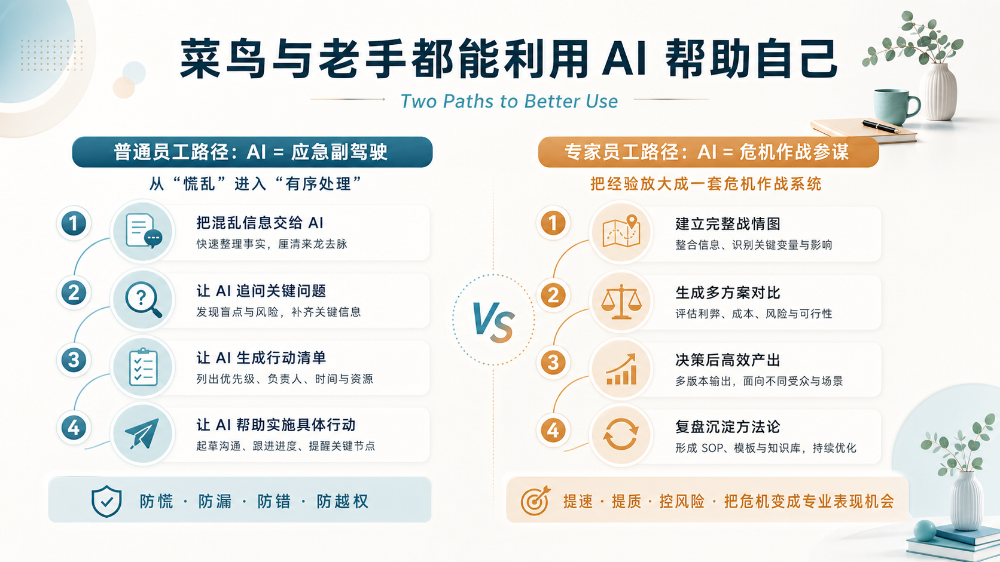
Act III · Learning Paths
09 / 20
菜鸟与老手都能利用 AI 帮助自己
Two Paths to Better Use
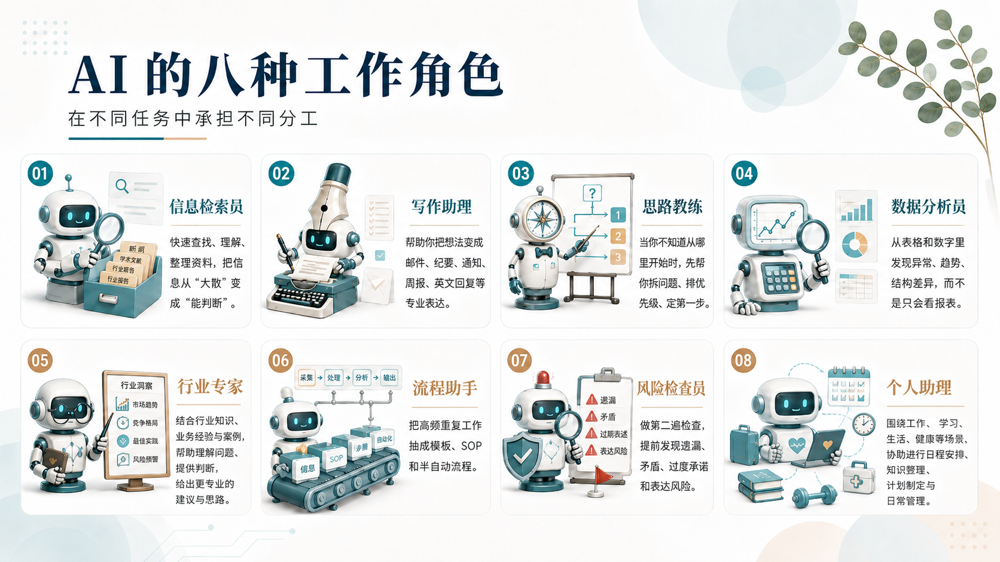
Act III · Roles AI Can Play
10 / 20
AI 的八种典型角色
Role by Role
Act III · Human + AI
11 / 20
Work with AI Like You Manage Talent
怎样与 AI 更好协作
把它当新人下属 不要当许愿池
AI 的典型特征
知识面广，但不等于理解你的具体业务。
执行很快，但容易夸大、自信、遗漏边界。
记忆有限，如果不给上下文，每次都像重新入职。
作为 manager / mentor 该做什么
给足背景和工序，不要只扔一句“帮我写一下”。
建立知识库，把专属材料喂给 AI，压低幻觉率。
允许多轮追问和修订，把结果逐步打磨成可交付版本。
01 · Raw Input
原始任务
先把手头任务自然地说出来，不追求完美。
02 · Structure
六格提示卡
把模糊需求补成背景、目标、受众、输出、约束和样例。
03 · Draft
第一次生成
先要一个能用初稿，而不是追求一步到位。
04 · Refine
二次追问
继续补、继续改、继续查风险，让草稿真正接近实战。
05 · Deliver
落地成品
明确“最后要发给谁，用来做什么动作”。
06 · Review
人工校验
事实、来源、边界、下一步是否清楚，最后必须有人负责。
怎样与 AI 更好地协作
Human + AI Workflow
Act III · Collaboration Method
12 / 20
Operating Model + Working Method
把协作分工变成稳定工作方法
先看清 AI 在任务里承担哪一种分工，再把零散使用沉淀成可复制、可复盘、可持续优化的工作路径。
01 · Execution
执行分担
适合规则清晰、流程固定、重复度高的工作，优先承接整理、筛选、对比、归纳等事务性环节。
02 · Assessment
组织协同
适合同一个事件需要面向不同对象输出不同内容，重点提升版本拆分、形式转换、逻辑表达和输出编排效率。
03 · Coordination
研判支持
适合情况复杂、时效要求高的工作，先完成梳理、识别、提炼和判断，帮助更快形成初步结论和对策。
边界判断
→
任务表达
→
前置处理
→
形成交付
→
流程协同
→
沉淀复用
先判断边界
先分清它适合做什么、不适合做什么，判断、责任和事实边界不能外包。
Boundary
再表达任务
把背景、目标、约束、输出和预期讲清楚，先把任务说明白。
Prompting
先做前置处理
用于资料理解、信息提炼、任务拆解、初步判断和关键问题识别。
Analysis
再形成交付
不只停留在对话，要能生成初稿、表格、纪要、清单和可直接使用的内容。
Output
再连成流程
把查找、整理、判断、起草、复核连接起来，与人配合完成多步骤任务。
Workflow
最后沉淀复用
把成熟做法固定成模板、提示词、知识库和流程，减少重复调试。
Reuse
协作分工与工作方法
Collaboration Method
Act IV · Tools Landscape
13 / 20
Tooling without Noise
找到最顺手的 AI 工具
先建立对各类工具的基础认知，再结合具体应用场景判断和试用。
Comprehensive Q&A
综合问答
ChatGPT · Gemini · Qwen · DeepSeek
百科知识、亲子关系、健身饮食计划、专业文献解读
AI Imaging
AI作图
GPT Image 2 · Nano Banana 2 · 即梦
兴趣娱乐、信息图、知识拆解、PPT 制作
AI Video
AI视频
即梦 · 可灵 · LibTV
兴趣娱乐、电商营销
AI Music
AI音乐
Suno · Mureka
兴趣娱乐
General Design
通用设计
Lovart · 星流
品牌视觉设计、电商营销内容、网页 UI、广告片、3D 手办
3D Modeling
3D建模
Hi3D · Hyper3D (Rodin)
三维内容与模型生成
Text to Audio
文字转音频
ElevenLabs · MiniMax Audio
文本配音、音频表达
Audio to Text
音频转文字
通义听悟 · 飞书妙记
会议记录、录音整理
Knowledge Base
知识库
NotebookLM
孩子作业辅导、兴趣培养、个人学习成长、PPT 制作
Commerce Agent
电商智能体
Accio Work
选品调研、供应链管理、商铺运营、客户管理、内容营销、定时报告
Light Workflow
轻量工作流/零代码开发
扣子（Coze） · 秒哒 · 灵光
个人工具搭建、想法验证、软件原型展示
Coding IDE
编程IDE工具
Cursor · TRAE · Workbuddy
编程辅助与开发环境增强
Native AI Agent
最强AI原生智能体
Claude Code · Codex
把复杂需求落成可执行结果，适合自动化、工具构建、流程衔接与真实交付场景
AI 工具推荐
Choose by Scenario
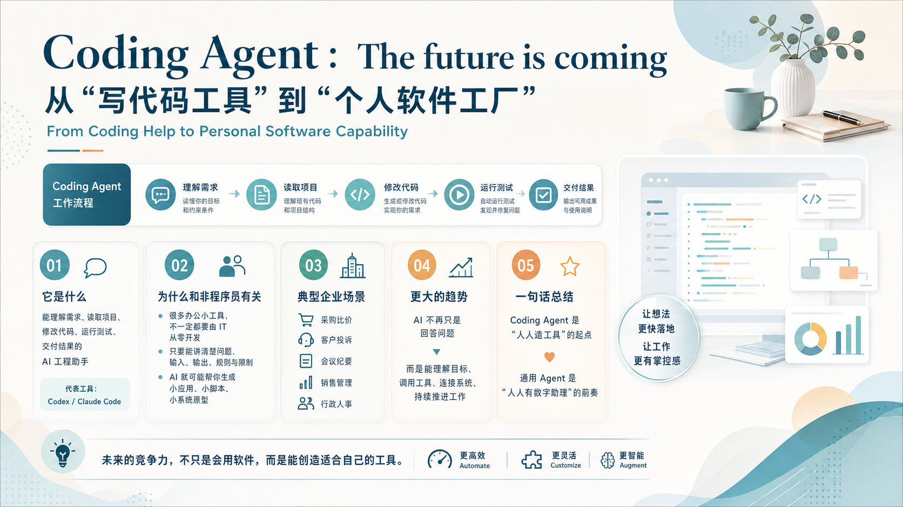
Act IV · Coding Agent
14 / 20
Coding Agent 从写代码工具到个人软件工厂
From Coding Help to Capability
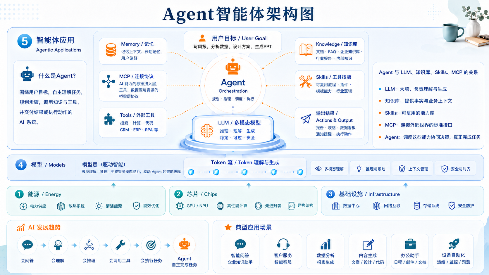
Act IV · Agent
15 / 20
Agent
AI Agent
Act IV · Work Scenes
16 / 20
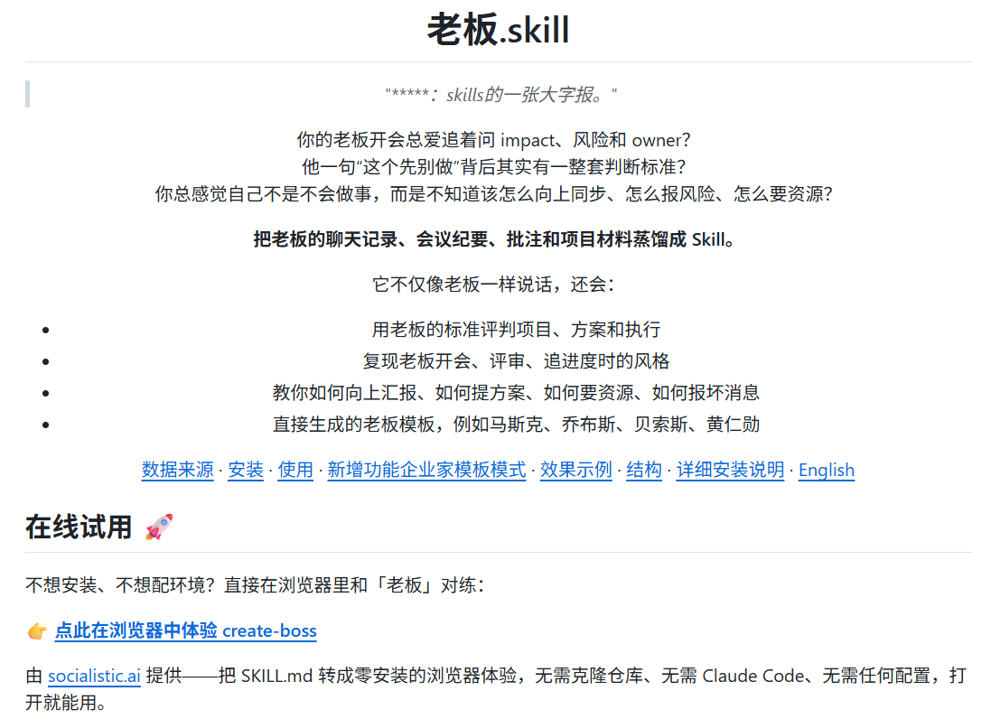
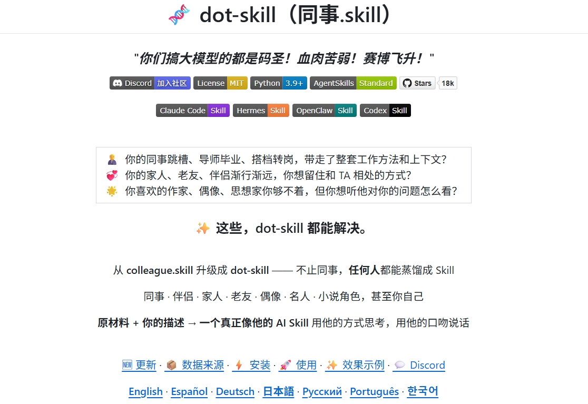
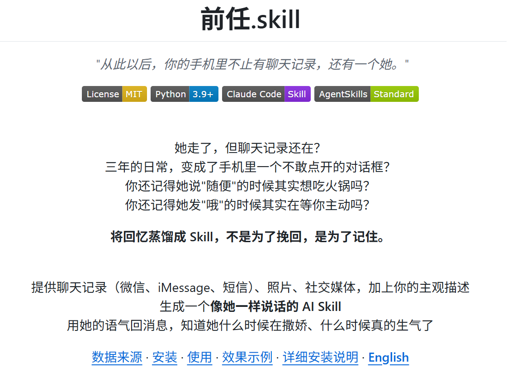
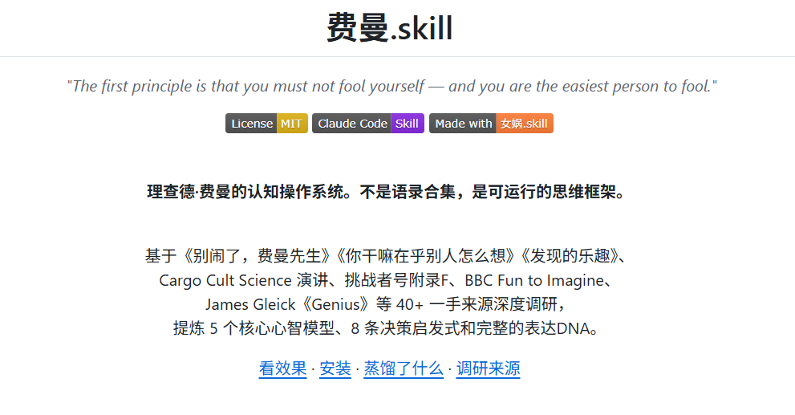
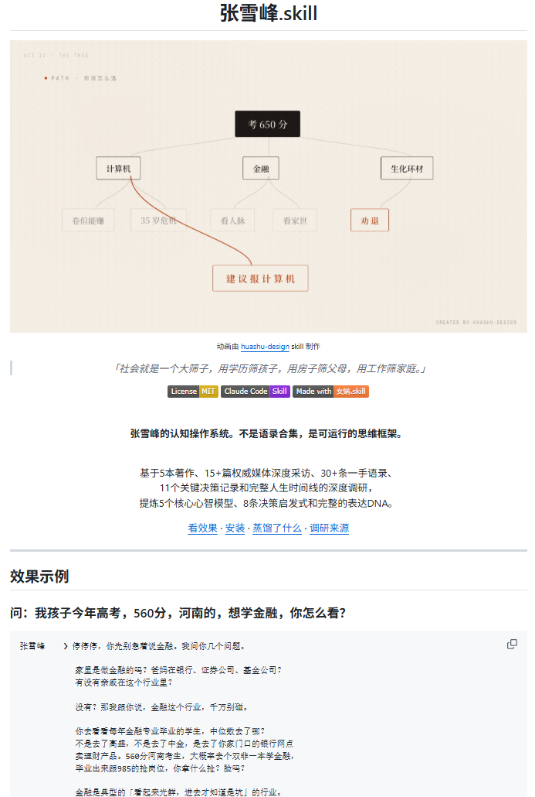
场景素材拼贴
Work Scenes

Act IV · Office Agent
17 / 20
智能办公助手
AI Agent · Automation
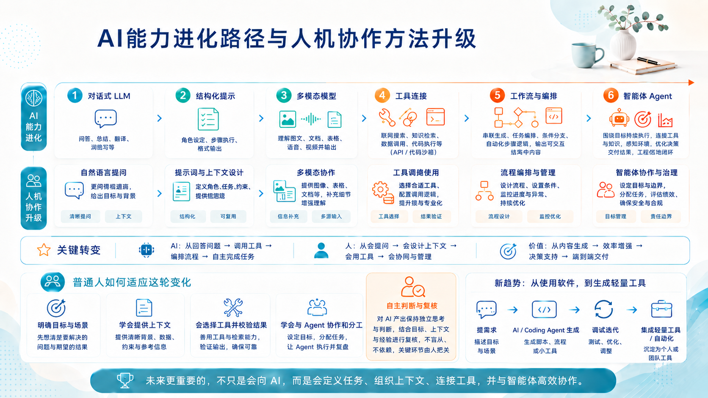
Act IV · Path
18 / 20
Path
Learning Path
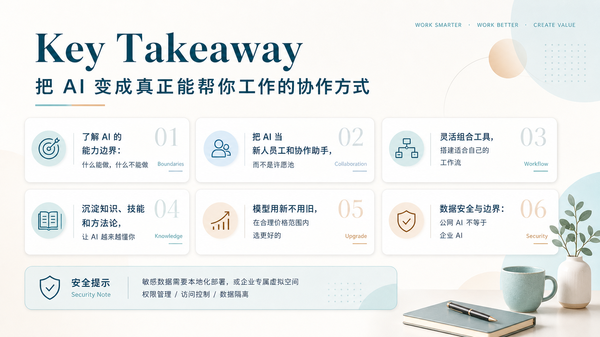
Act V · Key Takeaway
19 / 20
关键结论
Summary · Boundaries · Workflow
Act V · Closing
20 / 20
Closing Thought
感谢聆听
Attention Is All You Need.
AI 不会取代你，但会用 AI 的人会。
不必盲目追逐新工具，重要的是建立表达、协作与复用的方法，并保持独立思考和判断。
王亮·AI-Enabled Work·2026.05.21
结束页致谢
Closing Thought